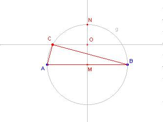

problema n° 60
Costruire il triangolo rettangolo di data ipotenusa c i cui cateti a e b hanno come media geometrica la metà dell'ipotenusa stessa: a*b = c²/4.
Construir el triángulo conociendo la hipotenusa c y tales que sus catetos a y b tengan como media geométrica la mitad de la hipotenusa, a*b= c²/4.
prof. Giovanni Porcellato
Liceo Scientifico "B. Pascal"
Merano
Alto Adige - Sudtirol
Italia
Costruzione e dimostrazione
Data l'ipotenusa AB si costruisce nell'ordine:
il punto medio M di AB,
la circonferenza g di centro M e raggio MA,
la retta perpendicolare per M ad AB;
il punto N, uno dei due punti d'intersezione tra la retta e la circonferenza g,
il punto medio O di MN,
la retta perpendicolare per O alla retta MN,
il punto C, uno dei due punti di intersezione tra la retta e la circonferenza g.

C è il terzo vertice del triangolo cercato.
Infatti se a, b e c sono rispettivamente le misure di BC, AC e AB l'area del triangolo rettangolo ABC, rettangolo perché C appartiene alla circonferenza g, può essere espressa sia in funzione di a e b sia in funzione di c:
area(ABC) = (a*b)/2 =
c*(c/4)/2.
Quindi a*b = c²/4.
Construcción y demostración
Dada la hipotenusa AB, si construimos en el orden siguiente:
El punto medio M de AB,
La circunferencia g de centro M y radio MA,
La recta perpendicular por M a AB
El punto N, uno de los puntos de intersección de la recta y la circunferencia g,
El punto medio O de MN,
La recta perependicular por O a la recta MN,
El punto C, uno de los puntos de intersección la recta y la circunferencia g,
C es el tercer vértice del triángulo.
En efecto, sea a, b y c respectivamente la medida de BC, AC y AB.
El área del triángulo rectángulo debido a pertenecer C a la circunferencia g, puede ser
Expresado tanto en función de a y de b como de c:
Area (ABC) = (a*b)/2 = c*(c/4)/2, de lo que a*b = c2/4